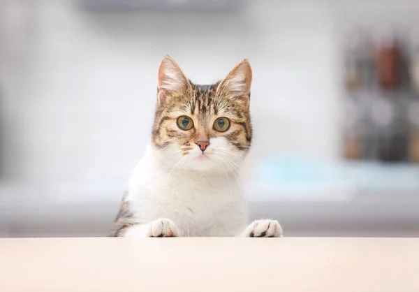
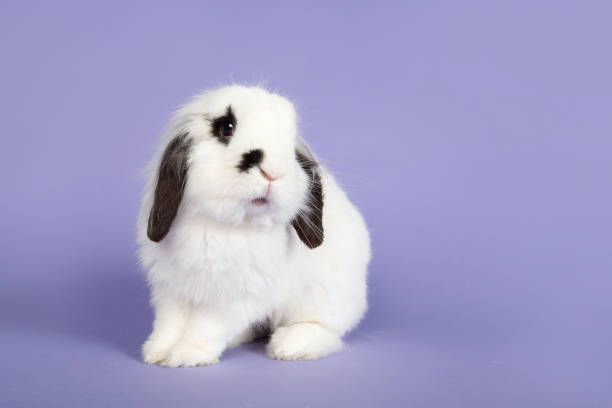
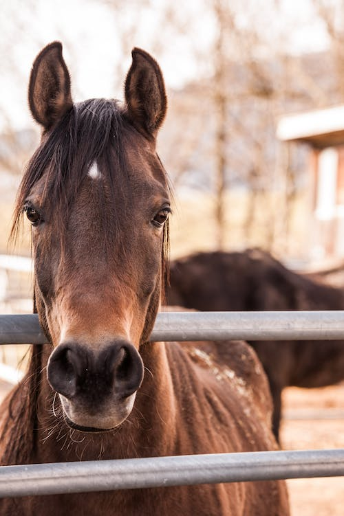

There are many preperations needed to be sure that the your pet lives a happy life. These are basic neccessity's that your pet will need for their first day:
To see the neccessity's, click on the arrow that will drop down on the specific pet you'd like to see.
Dogs
Food (Specific for each breed, size, age, etc)
Water Bowl
Dog Bed
Leash
Collar
Toys
Pee Pads
Conditionar & Shampoo
Brush
Nail Trimmer
Flee and Tick Prevention Product (may vary based on breed, size, age, etc.)
Cats
Food (Specific for each breed, size, age, etc)
Water Bowl
Cat Bed
Scartch Tower (or any type of product that is meant to be scratched)
Collar
Toys
Litter Box
Litter
Conditionar & Shampoo
Brush
Nail Trimmer
Flee and Tick Prevention Product (may vary based on breed, size, age, etc.)

Bunny
Food (Specific for each breed, size, age, etc)
Water Bowl
Rabbit Bed
Rabbit Cage and or Rabbit fence (depends on whether you want an free bunny or keep them in a cage. Should be decently big.)
Vaccume (Bunny's tend to shed a lot of hair, so it is convinient to have one on hand)
Toys
Fresh Vegatables
Nail Trimmer

Horse
Food (Specific for each breed, size, age, etc)
Water Bowl
Hay
Horse Saddle
Horseshoes
Hoof Pick
Hair Brush
Mane Brush
Conditionar & Shampoo
Fly Replent
Nail Trimmer
A fenced in area or a barn to keep them safe during all types of weather

Fish
Food (Specific for each breed, size, age, etc)
Tank(depends on type of fish and size)
Water filter
Fish Pebbles
Heater
Decorations (recommended to keep the fish in a similar enviorement, but no neccessary)
Guinea Pig
Food (Specific for each breed, size, age, etc)
Water Bowl
Cage
Toys
Hay
Hideaway (They need area to hide when they need too